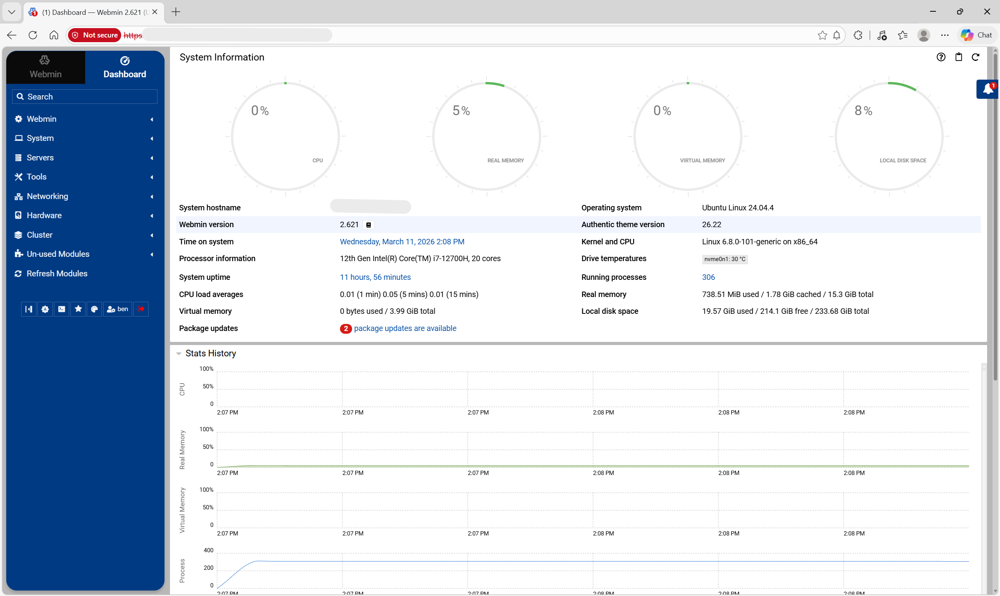

Home Lab Server / NAS
Repurposed old laptop hardware into an Ubuntu-based home lab server with Webmin, Samba, UFW firewall rules, and Windows-accessible shared storage.
Benjamin Graydon
I am building a foundation for entry-level IT, infrastructure, networking, and security-focused roles through practical projects, structured troubleshooting, and clear technical documentation. My work ranges from Java programming and Cisco Packet Tracer labs to Linux administration, NAS setup, and an ongoing historical digitization project.
The common thread across my projects is that I like systems I can test, break down, rebuild, and explain clearly. That includes diagnosing network behavior, validating access control, repurposing old hardware into a useful home lab server, and documenting each step so the work is easy to follow.
A quick view of the work that best represents my current direction in programming, networking, and systems administration.

Repurposed old laptop hardware into an Ubuntu-based home lab server with Webmin, Samba, UFW firewall rules, and Windows-accessible shared storage.

Enterprise-style Packet Tracer design with segmented VLANs, a Layer 3 core, DHCP relay, centralized services, and ACL-based policy enforcement.

Java multithreaded banking simulation featuring shared resources, synchronized transfers, lock ordering, and audit snapshots.
An ongoing personal project to digitize handwritten WWII flight logbooks into a searchable archive using OCR, preprocessing, and structured data extraction.
Structured troubleshooting, step-by-step documentation, and a willingness to learn by building systems instead of just reading about them.
Networking fundamentals, Linux administration, practical security tooling, and the kind of hands-on project work that translates well to IT support and infrastructure roles.
Expanding my home lab, improving my portfolio, and building projects that show real proof of work across systems, networking, and automation.